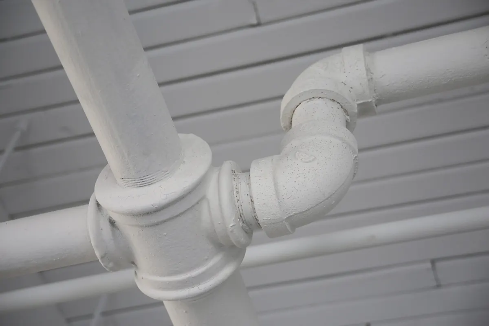

Why Angle Stop Plumbing Is Your Go-To Partner for Renovating Bathrooms, Kitchens, and Laundry Rooms
Introduction
Renovating your home’s bathrooms, kitchen, or laundry room is an exciting journey, but it comes with critical responsibilities that go beyond aesthetic upgrades. One of the most overlooked yet essential elements of a successful renovation is maintaining and updating your plumbing ventilation systems. In this blog, we’ll explore why proper plumbing ventilation is vital, the risks associated with neglecting it and why partnering with Angle Stop Plumbing is the smartest choice to ensure your project stands the test of time.

Understanding Plumbing Ventilation Systems
Plumbing ventilation systems, often referred to as vent stacks or vent pipes, are designed to remove sewer gases from your home and regulate air pressure in the plumbing system. This allows water and waste to flow freely and efficiently through your pipes. Without proper ventilation, you risk slow drains, frequent clogs, foul odors, and even dangerous gas buildup.
The Importance of Ventilation in Renovations
When updating bathrooms, kitchens, or laundry rooms, changes in layout or fixture placement can impact your plumbing system’s airflow. Even minor alterations can disrupt the balance and functionality of your vents, leading to:
- Backups and Clogs: Poorly ventilated systems cause wastewater to drain slowly, increasing the risk of backups and persistent clogs.
- Unpleasant Odors: Without proper venting, sewer gases can escape into your living spaces, creating unhealthy and uncomfortable conditions.
- Plumbing Damage: Negative pressure in the pipes may cause water traps to siphon dry, exposing your home to harmful gases and accelerating pipe corrosion.
- Building Code Violations: Many local building codes require specific venting practices. Neglecting these requirements can lead to failed inspections and costly rework.
Why You Need a Professional Partner
Plumbing ventilation is a complex field that requires specialized knowledge and experience. DIY solutions or unqualified contractors may overlook critical details, setting you up for future headaches and expenses. That’s why it’s essential to work with a trusted, licensed plumbing partner who understands the intricacies of residential plumbing systems.
Angle Stop Plumbing: Your Key to a Successful Renovation
At Angle Stop Plumbing, we pride ourselves on delivering comprehensive plumbing solutions tailored to your renovation needs. Here’s why homeowners and contractors alike choose us:
- Expertise in Ventilation Systems: Our team is well-versed in local codes and best practices, ensuring your renovations adhere to all safety and performance standards.
- Thorough Assessments: We evaluate your current plumbing and ventilation setup and design systems that optimize functionality and efficiency for your new layout.
- Preventive Approach: By addressing ventilation during renovations, we help you avoid costly repairs, repeated clogs, and lingering odors down the road.
- Clear Communication and Accountability: We keep you informed at every step, providing transparent pricing and guaranteed workmanship.
Conclusion
Don’t let plumbing ventilation become an afterthought in your home renovation. By prioritizing this crucial system, you protect your investment, your comfort, and your family’s health. Partnering with Angle Stop Plumbing gives you the peace of mind that your bathroom, kitchen, or laundry room upgrade is built to last—free from hidden plumbing issues and future frustrations.
Ready to start your renovation the right way? Contact Angle Stop Plumbing today and let’s build a safer, smarter home together!